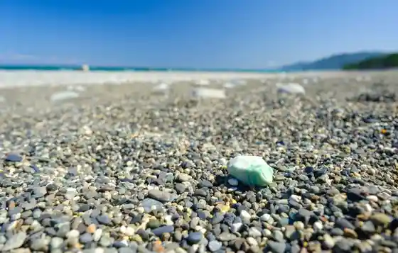
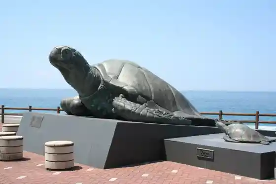

Hisui Coast
Itoigawa, Niigata · 025-553-1785 · Official / source link

Roadside Station (Marindoriimu no)
Itoigawa, Niigata · 025-566-3456 · Official / source link
Roadside Station (Oyashirazu Pia Park)
Itoigawa, Niigata · 025-561-7288 · Official / source link

Takanami no Ike
Itoigawa, Niigata · 025-556-2327 · Official / source link
Fossamaguna Museum
Itoigawa, Niigata · 025-553-1880 · Official / source link
Oyashirazu Ko Shirazu
Itoigawa, Niigata · 025-553-1785 · Official / source link
Tama Sui Sono Tani Village Art Museum
Itoigawa, Niigata · 025-552-9277 · Official / source link
Benten Iwa
Itoigawa, Niigata · 025-555-7344 · Official / source link
Otaki Kawa Hisui Kyo
Itoigawa, Niigata · 025-555-7344 · Official / source link
Itoigawa Aranami Anko VS Hon Zuwaigani Fuyu no Ni Dai Geki Umagurumefea
Itoigawa, Niigata · 025-555-7344 · Official / source link
Oitosen Zobin Basu
Itoigawa, Niigata · Official / source link
Itoigawa Jiosuteshon Jioparu
Itoigawa, Niigata · 025-555-7344 · Official / source link
Rengeonsen Shuhen
Itoigawa, Niigata · 090-2524-7237 · Official / source link
Roadside Station (Echigo City Shin no Kan (Kokudo 8 Go))
Itoigawa, Niigata · 025-564-2922 · Official / source link
Tenshin Shrine Nunakawa Shrine
Itoigawa, Niigata · 025-552-0036 · Official / source link
Hisui Sono
Itoigawa, Niigata · 025-552-9277 · Official / source link
Hisui Sagashi
Itoigawa, Niigata · 025-555-7344 · Official / source link
no Beach
Itoigawa, Niigata · 025-555-7344 · Official / source link
Yasui ! Hayai ! Umai ! Kurenai Zuwaigani
Itoigawa, Niigata · 025-566-3456 · Official / source link
Itoigawa Eki Kita Hiroba Kitare
Itoigawa, Niigata · 025-556-8200 · Official / source link
Itoigawa Beach
Itoigawa, Niigata · 025-555-7344 · Official / source link
Suzawa Rinkai Koen Oto Campground
Itoigawa, Niigata · 025-562-1360 · Official / source link
Live Cafe Hisui no Umi
Itoigawa, Niigata · 025-556-9100 · Official / source link
Oyashirazu Beach
Itoigawa, Niigata · 025-561-7288 · Official / source link
Machi Naka Rentasaikuru
Itoigawa, Niigata · 025-555-7344 · Official / source link
Itoigawa Burakku Yakisoba
Itoigawa, Niigata · 025-552-1742 · Official / source link
no Hakusan Shrine
Itoigawa, Niigata · 025-552-1511 · Official / source link
Momokawa Beach (2026 Nendo Kaisetsu Nashi)
Itoigawa, Niigata · 025-566-2214 · Official / source link
Arasaki Campground
Itoigawa, Niigata · 025-566-3456 · Official / source link
Yamato Kawa Beach
Itoigawa, Niigata · 025-555-7344 · Official / source link
3 Okunen Mae no Shinpi ! Kaseki Hakkutsu Taiken !
Itoigawa, Niigata · 025-553-1880 · Official / source link
Shoren Kazan Rengeonsen Tozanguchi
Itoigawa, Niigata · 025-552-1511 · Official / source link
Shiromadake Rengeonsen Rojji
Itoigawa, Niigata · 090-2524-7237 · Official / source link
Kaga no I Shuzo
Itoigawa, Niigata · 025-552-0047 · Official / source link
Tetsudo Suki Hikken ! Jiorama Tetsudomokei De Untenshu Ninaro !
Itoigawa, Niigata · 025-555-7344 · Official / source link
Amakazari Sanroku Shiro Ike Forest
Itoigawa, Niigata · 025-558-2002 · Official / source link
no Gyoko Hiru Seri City Ba Kengaku
Itoigawa, Niigata · 025-555-7344 · Official / source link
Komagagaku Daijin Do Tozanguchi
Itoigawa, Niigata · 025-552-1511 · Official / source link
Shiraike
Itoigawa, Niigata · 025-553-1785 · Official / source link
Sharuman Hiuchi Ski Area
Itoigawa, Niigata · 025-568-2244 · Official / source link
Fudo Taki Campground
Itoigawa, Niigata · 025-552-3100 · Official / source link
Rengeonsen Campground
Itoigawa, Niigata · Official / source link
Nihonsaiko no Hoseki “ Hisui ” no Buresuretto Wo Tsukuro U !!
Itoigawa, Niigata · 025-552-9277 · Official / source link
Amakazari Yama Amakazari Onsen Tozanguchi
Itoigawa, Niigata · 025-552-1511 · Official / source link
Bibira Hama (Fujisaki) Beach
Itoigawa, Niigata · 025-555-7344 · Official / source link
100 Nenmae no Tonneru Wo Aruko U ! Oyashirazu Rengatonneru
Itoigawa, Niigata · 025-555-7344 · Official / source link
Daio Ajisai Sono
Itoigawa, Niigata · 025-555-7344 · Official / source link
mûrir
Itoigawa, Niigata · 080-2679-4399 · Official / source link
Myojo Yama Hisui Kyo Tozanguchi
Itoigawa, Niigata · 025-552-1511 · Official / source link
Itoigawa Shiisaidobare Ski Area
Itoigawa, Niigata · 025-558-2244 · Official / source link
Miyama Park
Itoigawa, Niigata · 025-555-7344 · Official / source link
Kaiya Gorge
Itoigawa, Niigata · 025-552-0268 · Official / source link
Kaiya Sankyo Park
Itoigawa, Niigata · 025-552-0268 · Official / source link
Gatsu Kazan Kanekotsutsuji Sono
Itoigawa, Niigata · 025-553-1785 · Official / source link
Taira Ushi Shidare Sakura
Itoigawa, Niigata · 025-555-7344 · Official / source link
Hiiringu Garden Takanami Campground
Itoigawa, Niigata · 025-556-2327 · Official / source link
Seikai Sogo Guraundo
Itoigawa, Niigata · 025-555-7344 · Official / source link
Kurohime Yama
Itoigawa, Niigata · 025-562-2260 · Official / source link
Club Hausu Miyama
Itoigawa, Niigata · 025-552-1511 · Official / source link
Hisui Kyo Fisshingu Park
Itoigawa, Niigata · 025-556-2327 · Official / source link
Ogata Basu Deha Ike Nai “ Hikyo Otaki Kawa Hisui Kyo ”
Itoigawa, Niigata · 025-555-7344 · Official / source link
Saku Kuchi no Mannen Yuki
Itoigawa, Niigata · 025-555-7344 · Official / source link
Himegawa Sakura Zutsumi
Itoigawa, Niigata · 025-555-7344 · Official / source link
Meipurushiroppu Saishu & Shiroppu Tsukuri Experience
Itoigawa, Niigata · Official / source link
Toku Go Shidarezakura
Itoigawa, Niigata · 090-1667-0195 · Official / source link
Gaido to Tanoshi Mumachiaruki
Itoigawa, Niigata · 025-555-7344 · Official / source link
Hisuikakuteru
Itoigawa, Niigata · 025-552-1225 · Official / source link